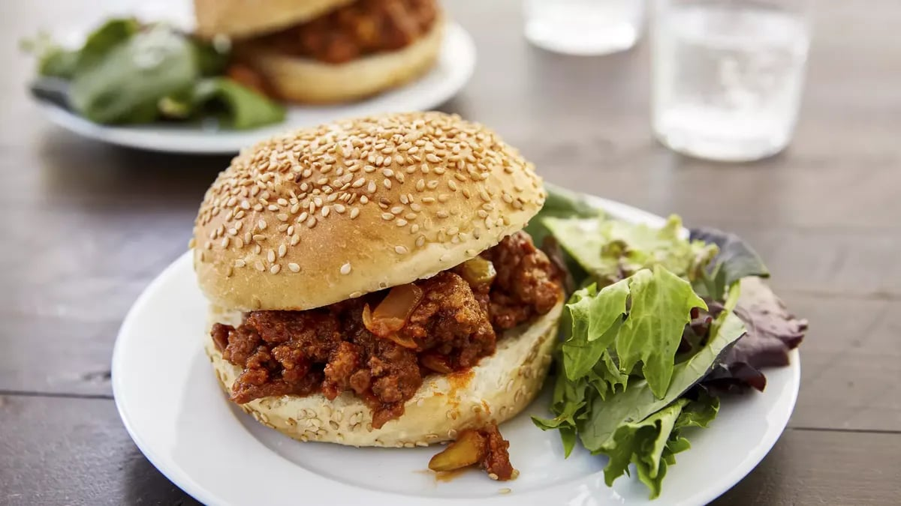

Sloppy Joes

Prep Time: 10 Min Total: 35 Min Servings: 6 Ingredients: 8
INGREDIENTS
- 1 lb lean (at least 80%) ground beef
- 1 medium onion, chopped (1/2 cup)
- 1/4 cup chopped celery
- 1 cup ketchup
- 1 tablespoon Worcestershire sauce
- 1 teaspoon ground mustard
- 1/8 teaspoon pepper
- 6 hamburger buns, split
INSTRUCTIONS
- In 10-inch skillet, cook beef, onion and celery over medium heat 8 to 10 minutes, stirring occasionally, until beef is brown; drain.
- Stir in remaining ingredients except buns. Heat to boiling; reduce heat. Simmer uncovered 10 to 15 minutes, stirring occasionally, until vegetables are tender.
- Fill buns with beef mixture.